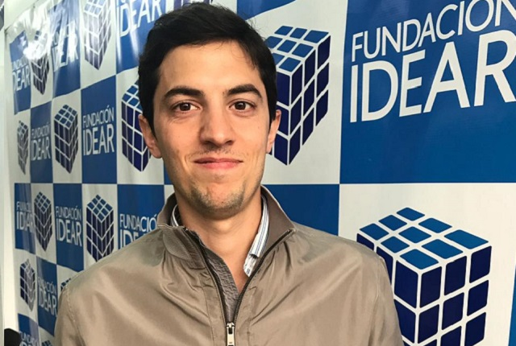

<div class="equipo"></div>
<div class="titulo">
    <div *ngIf="enableEdit">
        <a [routerLink]="['/edit','Equipo']">
            <span class="mdi mdi-settings"></span>
        </a>
    </div>
    Equipo
</div>
<div class="slider">
    <div class="team-slider">
        <!-- Datos generados desde el servidor: -->
        <!-- La función sort en el query a la BD del lado del servidor devuelve el orden correcto, por lo que no necesito corregirlo acá -->
        <div class="grid-container" *ngFor="let member of members">
            <ng-container *ngIf="member.show">
                <div class="foto"></div>
                <div class="nombre">{{member.name}}</div>
                <div class="cargo">{{member.position}}</div>
                <div class="descripcion">{{member.description}}</div>
            </ng-container>
        </div>
        <!-- Datos de ejemplo: -->
        <!-- <div class="grid-container">
            <div class="foto"></div>
            <div class="nombre">Juan Aráoz</div>
            <div class="cargo">Presidente</div>
            <div class="descripcion">
                Abogado (FD-UCC). 42 años. Casado y 4 hijos. Especialista en Derecho Penal (Universidad de Salamanca). Relator de Cámara en Tribunales Federales. Socio Estudio Jurídico Araoz &amp;Asoc. Especialista en Derecho Ambiental (UCC). Director de Asuntos Legales de la Legislatura de la Provincia de Córdoba.
            </div>
        </div>
        <div class="grid-container">
            <div class="foto"></div>
            <div class="nombre">Pablo Bono</div>
            <div class="cargo">Tesorero</div>
            <div class="descripcion">
                Contador Público (FCE-UNC). 32 años. Socio Estudio Contable Integral Córdoba. Miembro de la Comisión de Estudios Tributarios C.P.C.E. Córdoba. Relator de Comisión Agricultura, Ganadería y Recursos Renovables en la Legislatura de la Provincia de Córdoba.
            </div>
        </div>
        <div class="grid-container">
            <div class="foto"></div>
            <div class="nombre">Lucas Benavidez</div>
            <div class="cargo">Asesor/Director Académico</div>
            <div class="descripcion">
                Abogado, Escribano- Mediador (UNC), 32 años. Docente. Relator en el Poder Judicial de la Provincia de Córdoba.Director Académico de C.E.A.D.E.
            </div>
        </div>
        <div class="grid-container">
            <div class="foto"></div>
            <div class="nombre">María Eugenia Valerio</div>
            <div class="cargo">Medios/Organización</div>
            <div class="descripcion">
                Licenciada en Comunicación Social,especialización en  Institucional (UNC) 35 años
            </div>
        </div> -->
    </div>
</div>
